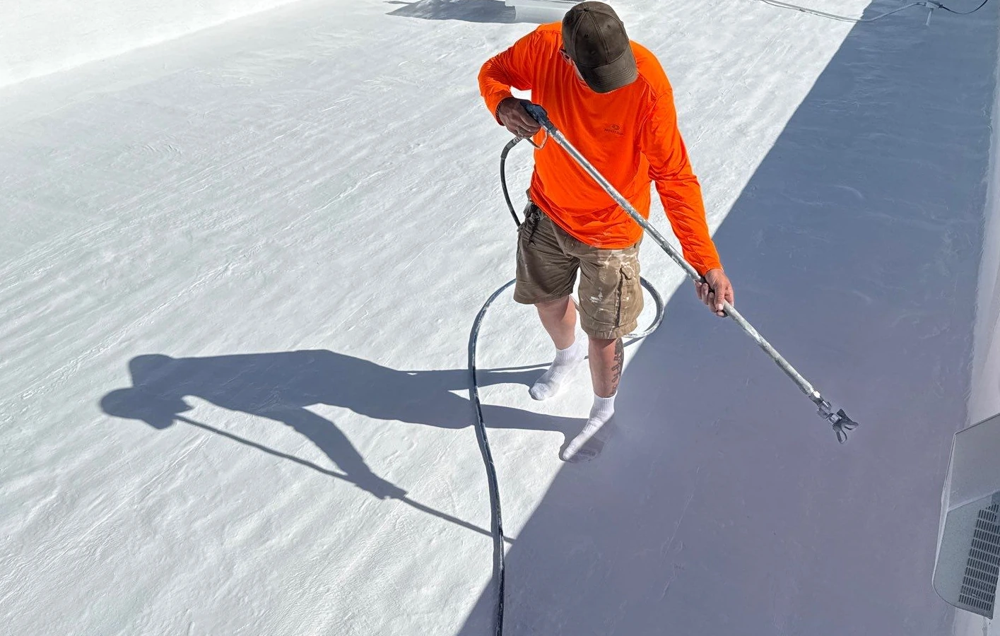
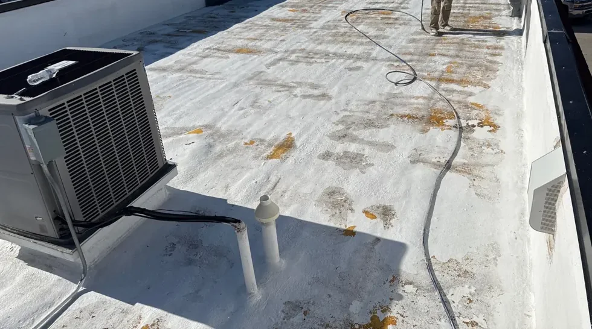
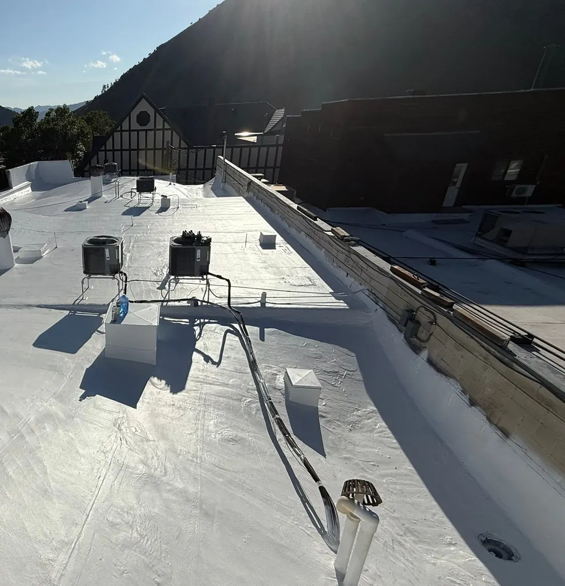

Riverton, Wyoming Applying the roof coating
Riverton, Wyoming May 2025
The same roof, before and after.
This flat roof had already been patched in several places. The photographs show how we carried the new finish across those repairs and up the base of the rooftop unit.
Inside the Riverton project

Before After
AfterCommercial roofing systems
Can your roof be restored?
We start with what’s already on the building. A leak at a fastener calls for different work than moisture below the roof surface.
What we look for on a roof visit
Jackson, Wyoming June 2025
Downtown Jackson.
On June 16, we photographed the exposed wood deck. Eleven days later, the view from the roof shows the finish around two condenser units and a vent pipe.
See the Jackson project